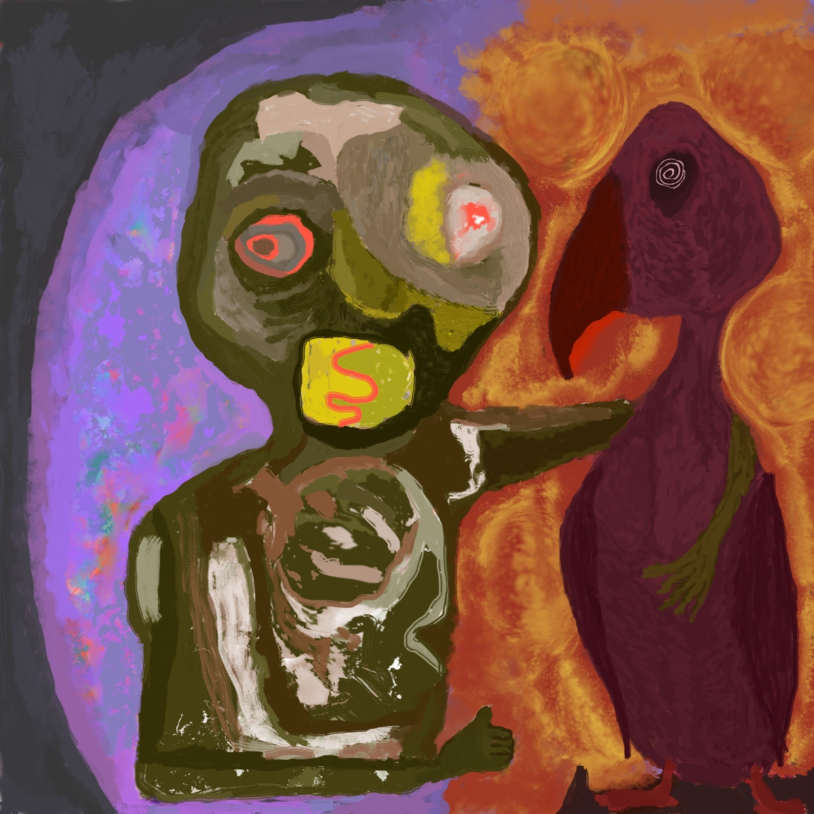
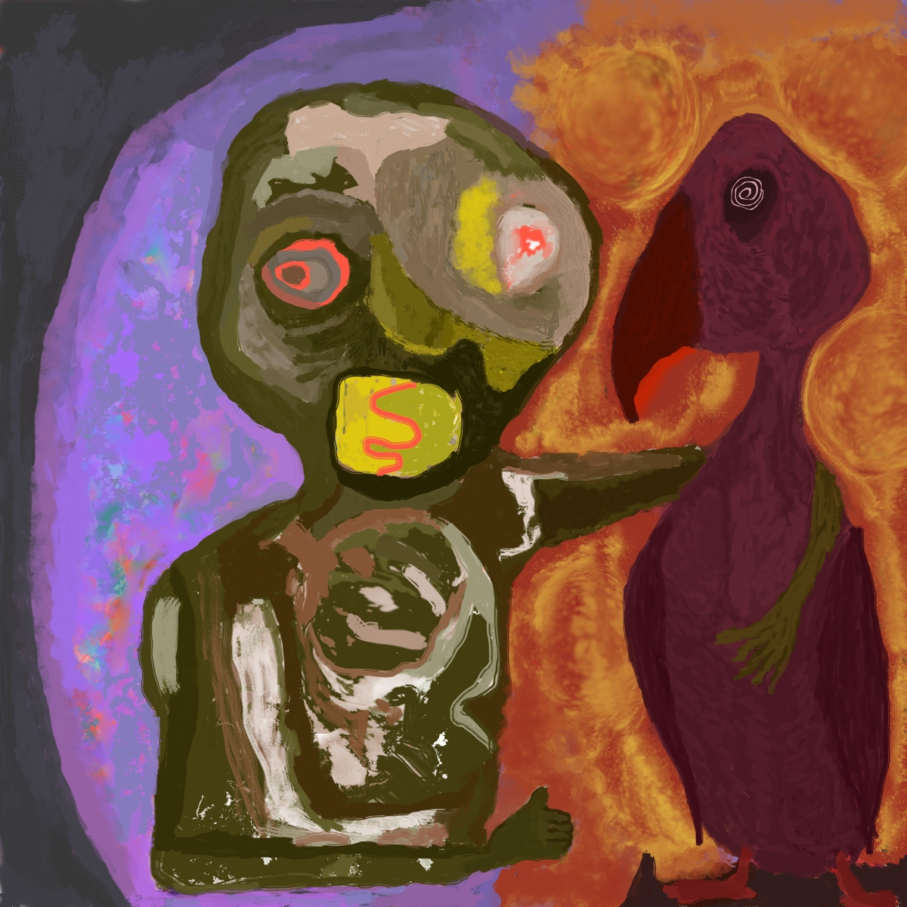
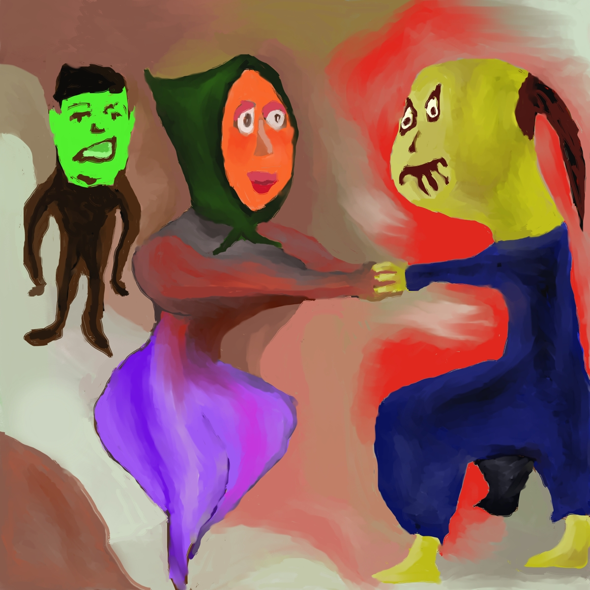
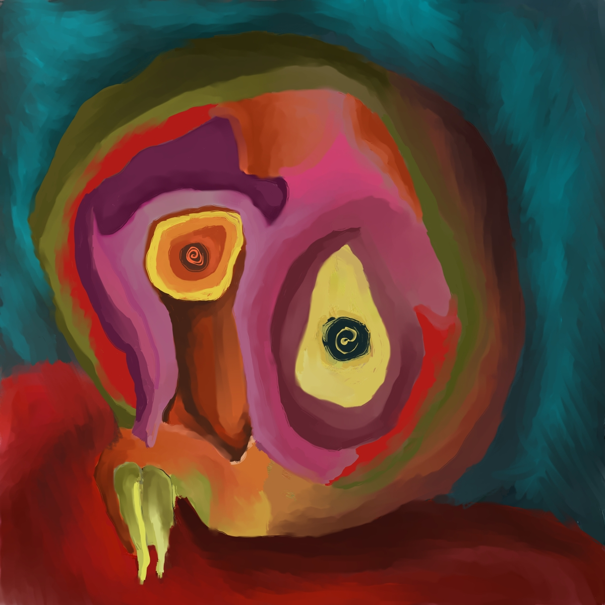
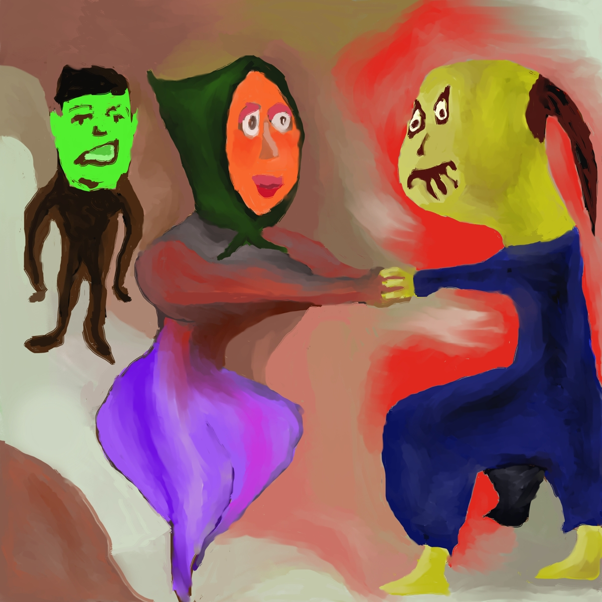
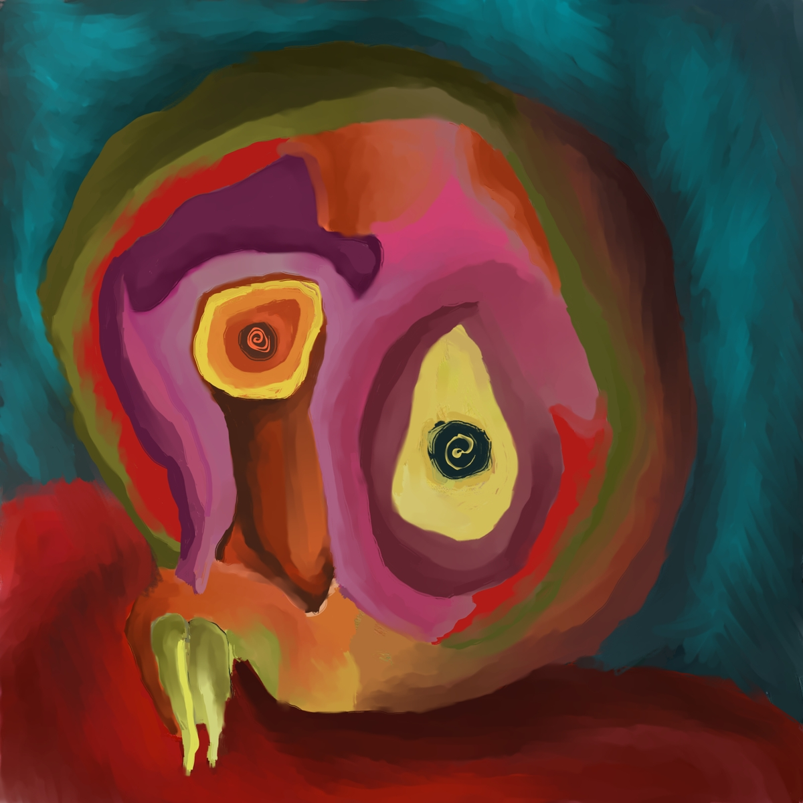
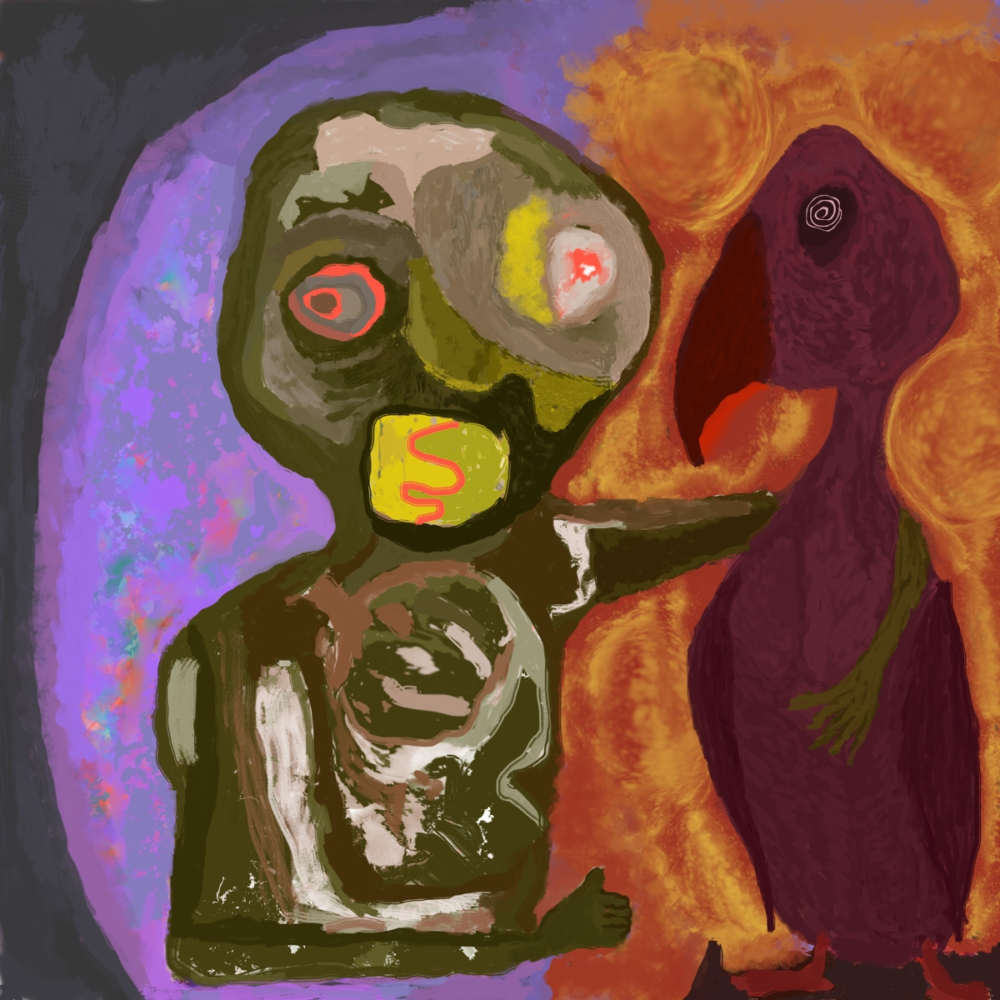
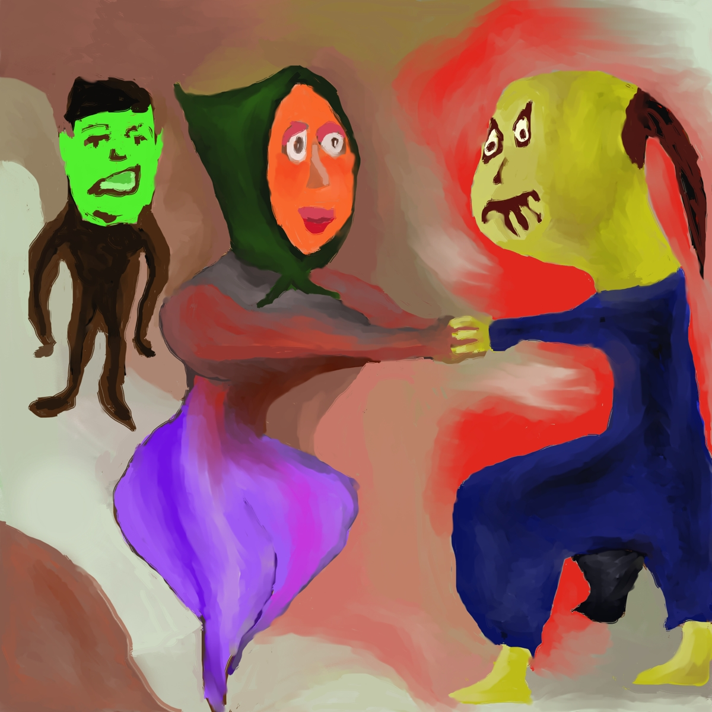
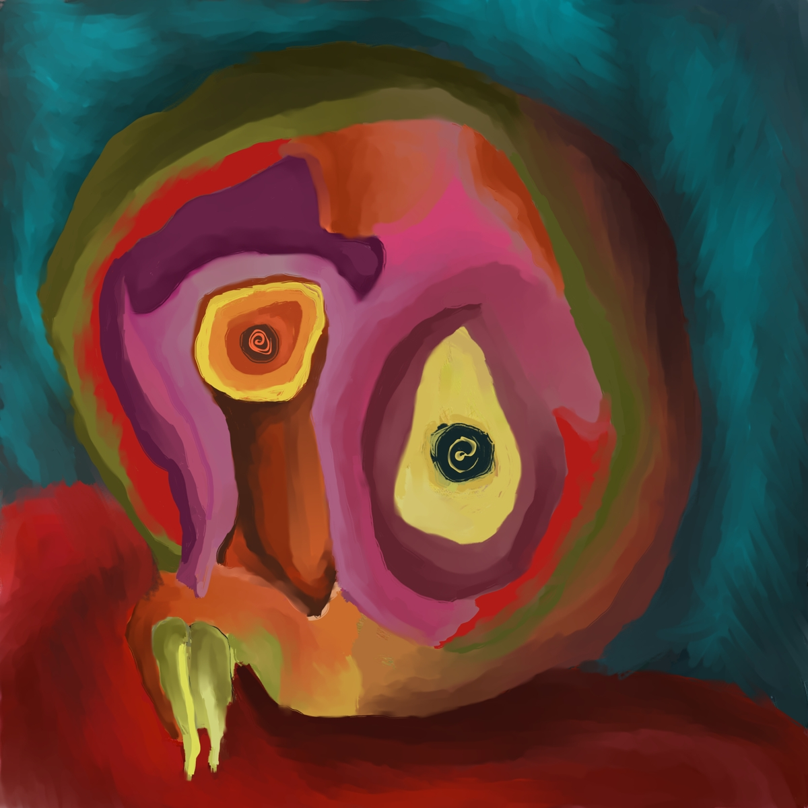

Paintings

 

 



The Art of Grotesque Faces, Deformed Figures, Broken Worlds, and Restless Visions
Denke is a multidisciplinary artist working in both painting and music. In his music career, he was a singer, guitarist, and songwriter in the bands Elektrolasta and Strašni Haremski Čuvari, and today he performs under the name Mega Denke. He has been actively engaged in painting since 2008, when he began working within the art collective Mubareć. He is also one of the founders of the association Art Brut Serbia, which promotes outsider art and artists outside the mainstream. Since 2024, he has been a permanent member of the Center for Depth Art.
His art is marked by a raw, expressive aesthetic, developed outside the framework of formal art training. Denke paints in an automatic and intuitive way, guided by impulse rather than planned composition. His works usually depict expressive anthropomorphic and zoomorphic figures, deformed, grotesque, and mutated—beings on the threshold of the human, animal, and fantastic. These figures appear in scenes that evoke mythological motifs and archetypal patterns, though without a clearly developed narrative. His painting is an act of personal introspection—a visual reflection of inner tensions, conflicts, and frustrations, often imbued with irony and a humorous detachment.


